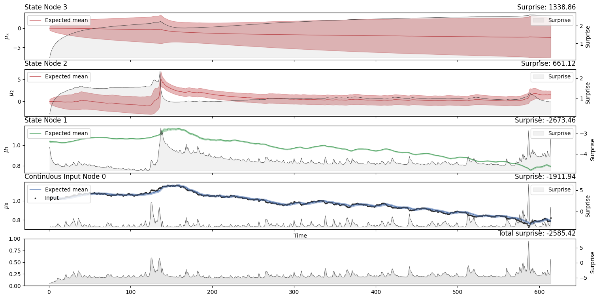
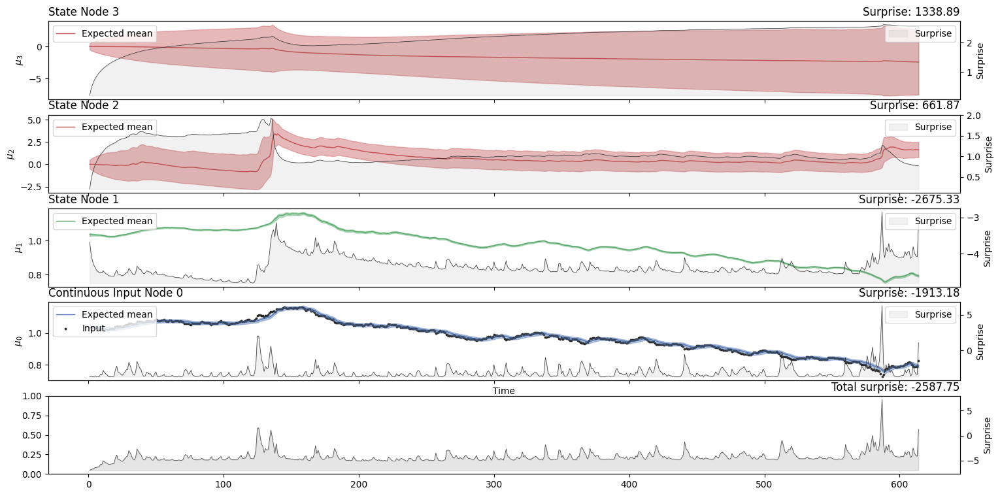

from pyhgf import load_data
from pyhgf.model import Network
import matplotlib.pyplot as plt
timeserie = load_data("continuous")
unbounded = (
Network()
.add_nodes(precision=1e4)
.add_nodes(precision=1e4, mean=timeserie[0], tonic_volatility=-13.0, value_children=0)
.add_nodes(precision=1e1, tonic_volatility=-2.0, volatility_children=1)
.add_nodes(precision=1e1, tonic_volatility=-2.0, volatility_children=2)
)
unbounded.input_data(input_data=timeserie).plot_trajectories(show_total_surprise=True);

ehgf = (
Network(update_type="eHGF")
.add_nodes(precision=1e4)
.add_nodes(precision=1e4, mean=timeserie[0], tonic_volatility=-13.0, value_children=0)
.add_nodes(precision=1e1, tonic_volatility=-2.0, volatility_children=1)
.add_nodes(precision=1e1, tonic_volatility=-2.0, volatility_children=2)
)
ehgf.input_data(input_data=timeserie).plot_trajectories(show_total_surprise=True);
standard = (
Network(update_type="standard")
.add_nodes(precision=1e4)
.add_nodes(precision=1e4, mean=timeserie[0], tonic_volatility=-13.0, value_children=0)
.add_nodes(precision=1e1, tonic_volatility=-2.0, volatility_children=1)
.add_nodes(precision=1e1, tonic_volatility=-2.0, volatility_children=2)
)
standard.input_data(input_data=timeserie).plot_trajectories(show_total_surprise=True);

plt.figure(figsize=(12, 5))
plt.title("X2")
plt.plot(unbounded.node_trajectories[2]["mean"], label="unbounded")
plt.plot(ehgf.node_trajectories[2]["mean"], label="eHGF")
plt.plot(standard.node_trajectories[2]["mean"], label="standard")
plt.legend()
<matplotlib.legend.Legend at 0x7f86994646b0>
plt.figure(figsize=(12, 5))
plt.title("X2")
plt.plot(unbounded.node_trajectories[2]["precision"], label="unbounded")
plt.plot(ehgf.node_trajectories[2]["precision"], label="eHGF")
plt.plot(standard.node_trajectories[2]["precision"], label="standard")
plt.legend()
<matplotlib.legend.Legend at 0x7f8699376b70>
plt.figure(figsize=(12, 5))
plt.title("X3")
plt.plot(unbounded.node_trajectories[3]["mean"], label="unbounded")
plt.plot(ehgf.node_trajectories[3]["mean"], label="eHGF")
plt.plot(standard.node_trajectories[3]["mean"], label="standard")
plt.legend()
<matplotlib.legend.Legend at 0x7f8698c14380>
unbounded.to_pandas()[["x_2_mean", "x_2_precision"]].head(5)
| x_2_mean | x_2_precision | |
|---|---|---|
| 0 | -0.001315 | 4.254841 |
| 1 | -0.003792 | 2.707180 |
| 2 | -0.007876 | 1.990393 |
| 3 | -0.013402 | 1.578491 |
| 4 | -0.019213 | 1.311108 |
ehgf.to_pandas()[["x_2_mean", "x_2_precision"]].head(5)
| x_2_mean | x_2_precision | |
|---|---|---|
| 0 | -0.001315 | 4.254841 |
| 1 | -0.003792 | 2.707180 |
| 2 | -0.007876 | 1.990393 |
| 3 | -0.013402 | 1.578491 |
| 4 | -0.019213 | 1.311108 |
standard.to_pandas()[["x_2_mean", "x_2_precision"]].head(5)
| x_2_mean | x_2_precision | |
|---|---|---|
| 0 | -0.001313 | 4.254841 |
| 1 | -0.003784 | 2.707177 |
| 2 | -0.007849 | 1.990388 |
| 3 | -0.013339 | 1.578484 |
| 4 | -0.019106 | 1.311100 |